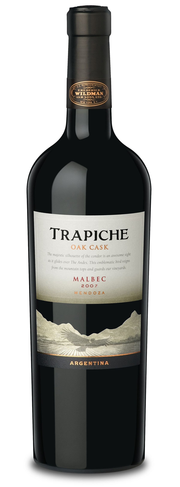

ROUGE
Cépage rouge originaire de Cahors, qui a trouvé à Mendoza une seconde patrie et est devenu l’emblème de l’Argentine.

Le malbec vient du Sud-Ouest de la France, en particulier de la région de Cahors, dans la vallée du Lot, où on l’appelle traditionnellement côt ou auxerrois. Les analyses ADN ont montré qu’il est issu du prunelard et de la magdeleine noire des Charentes, ce qui en fait un demi-frère du merlot. Cépage important du Bordelais avant le phylloxéra, il y a beaucoup reculé après les gelées de 1956.
Il débourre tôt et mûrit en deuxième époque ; il est sensible à la coulure, au mildiou et aux gelées de printemps. Il a besoin de soleil et de chaleur pour bien mûrir. Sous le climat sec, ensoleillé et d’altitude de Mendoza, il a trouvé des conditions idéales : les raisins restent sains et la forte amplitude thermique entre le jour et la nuit favorise couleur et fraîcheur.
Il donne des vins très sombres, souvent aux reflets violacés, de corps moyen à ample, aux tanins fermes mais mûrs. En Argentine dominent la prune, la mûre, la cerise noire et la violette, avec des touches d’épices et, après élevage en chêne, de vanille et de chocolat. À Cahors, les vins sont généralement plus tanniques, terriens et austères, avec un bon potentiel de garde. On l’utilise aussi en assemblage et pour des rosés.
L’Argentine en possède la plus grande surface au monde, surtout à Mendoza (Luján de Cuyo, vallée de l’Uco), avec des plantations aussi à San Juan, Salta et en Patagonie ; son arrivée dans le pays est généralement attribuée à l’agronome français Michel Aimé Pouget, au milieu du XIXe siècle. En France, c’est le cépage principal de l’AOC Cahors, et il est cultivé dans une moindre mesure en Loire et dans le Bordelais. On le trouve en outre au Chili, aux États-Unis (Californie, Washington), en Australie, en Afrique du Sud et en Nouvelle-Zélande.
En Argentine, c’est le compagnon classique de l’asado et des viandes grillées ; il convient aussi aux empanadas, aux ragoûts et aux fromages affinés. Les cahors, plus tanniques, accompagnent bien le confit de canard et le cassoulet. On le sert entre 16 et 18 °C.


